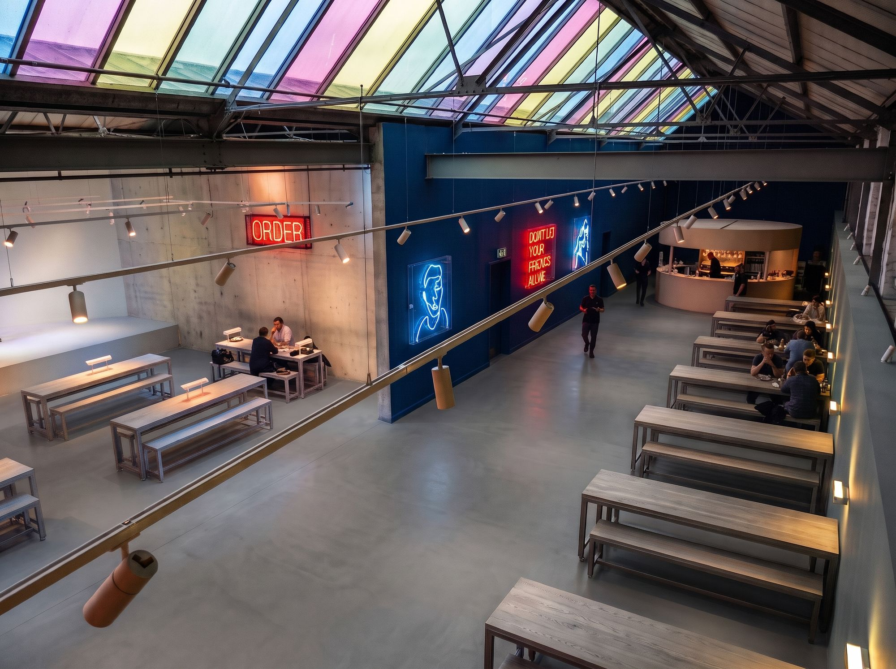

Lichtplan voor een restaurant met brouwerij
In een voormalige industriehal in het Hamerkwartier in Amsterdam-Noord komen een brouwerij, een restaurant en een groot terras samen. Voor deze plek maakte ik een lichtplan dat past bij het karakter van de zaak: vrienden, bier, eten, kunst en muziek, kleurrijk en no-nonsense.
Het prisma werd het concept. Zoals wit licht in een prisma uiteenvalt in alle kleuren van de regenboog, zo krijgt de hal een speels kleurenspel: een glazen dak in regenboogtinten, gekleurd licht op de wanden en neonteksten die de sfeer bepalen.
Het lichtplan deelt de hoge hal op in zones: kleine en grote tafels, een sharing table, de bar en de Prisma room met podium, waar gegeten, gedanst en gedraaid wordt. Spots op rails geven het algemene licht en zijn makkelijk te richten. Oplaadbare tafellampjes zorgen voor sfeer aan tafel en een ledstrip onder het bartop laat de bar ’s avonds gloeien. Op het terras zorgen gekleurde lichtbuizen, tafellampjes en lichtkunst voor dezelfde sfeer buiten.
Licht dat breekt zoals in een prisma: kleurrijk, speels en zonder poespas.
Impressies van het ontwerp
Uit het ontwerpproces
Van zones en kernwaarden via moodboards en lichtschetsen naar het lichtplan voor restaurant en terras, en een lichtberekening van de hal.